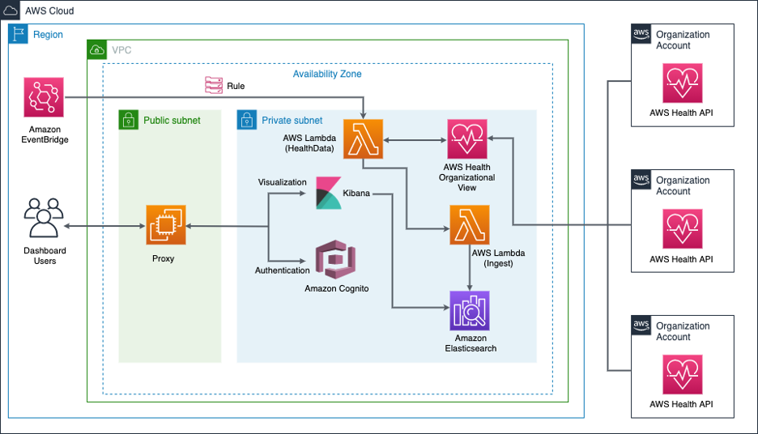

Beschreibung
Das AWS Service Health Dashboard ist eine zentrale Ressource, die kontinuierlich Informationen über die Verfügbarkeit der AWS-Services in tabellarischer Form bereitstellt. Diese Daten sind über die Service Health Dashboard-Seite von Amazon Web Services abrufbar und ermöglichen es Benutzern, den aktuellen Status der AWS-Services zu überprüfen.
Darüber hinaus besteht die Möglichkeit, einen RSS-Feed zu abonnieren, um Benachrichtigungen über Unterbrechungen einzelner Dienste zu erhalten.
AWS Health bietet tiefe Einblicke in die Leistung von Ressourcen und die Verfügbarkeit der AWS-Dienste und -Konten.
Dies geschieht durch AWS Health-Ereignisse, die Informationen darüber liefern, wie sich Änderungen an Services und Ressourcen auf die in der AWS ausgeführten Anwendungen auswirken können.
Die Ereignisse von AWS Health bieten detaillierte und aktuelle Informationen, die bei der Verwaltung von laufenden Ereignissen unterstützen und Benutzern helfen, sich über geplante Aktivitäten zu informieren und darauf vorzubereiten.
AWS Health sendet Warnungen und Benachrichtigungen bei Änderungen im Zustand von AWS-Ressourcen, was eine nahezu sofortige Ereignistransparenz ermöglicht und Anleitungen zur beschleunigten Fehlerbehebung bietet.
Das AWS Health Dashboard bietet eine umfassende Zustandsprüfung aller Dienste in allen AWS-Regionen.
Durch Gesundheitsereignisse können Benutzer verstehen, wie sich Änderungen an Diensten und Ressourcen auf ihre in der AWS gehosteten Anwendungen auswirken können.
Somit dient das Dashboard als unverzichtbares Werkzeug, um über die Gesundheit der AWS-Services informiert zu bleiben und schnell auf Ereignisse reagieren zu können.
* AWS Service Health Dashboard bietet Statusinformationen zu AWS-Services.
* Erreichbar über die Service Health Dashboard-Seite von AWS.
* Benutzer können Status prüfen oder RSS-Feed abonnieren.
* AWS Health ermöglicht Einblicke durch Health-Ereignisse.
* Informiert über Auswirkungen von Änderungen auf AWS-Anwendungen.
* Sendet Warnungen bei Änderungen im Zustand von AWS-Ressourcen.
* Dashboard prüft Zustand aller Dienste in allen AWS-Regionen.
* Hilft Benutzern, Auswirkungen auf AWS-Anwendungen zu verstehen.
* Unverzichtbares Werkzeug, um über AWS-Servicegesundheit informiert zu bleiben.
Schlüsselwörter
> > > Schlüsselworte bzw. Schlagworte sollen uns dabei helfen, einen Service leichter zu erkennen, wenn es um Prüfungsfragen geht. Ließ dir die Fragen richtig durch und achte auf folgende Schlüsselworte. Sie können dir bei der Beantwortung der Fragen helfen.
- Container-Orchestrierung: ECS ermöglicht daren von Docker-Containern in der AWS-Cloud.
- Container-Definitionen: Definition von Containber die Verwendung von Aufgaben (Tasks) und Services.
- Docker-Integration: ECS unterstützt Docker-Container und ermöng von Docker-Images.
- Task-Definitionen: Spezifikationen, wie eine Aufgabe (Task) in einvon Services, um langfristig laufende Anwendungetartet und Aufgaben ausgeführt werden.
- Auto Scaling: Automatische Anpassung der Anzahl von las basieinierbaren Metriken.
- Load Balancing: Integration mit dem Elastic Load Balancing-Dienst für die Lr.
- AWS Fargate: Option zur Ausführung von Containern ohne die Notwendigkeit, EC2.
- Integration mit Amazon ECR: Nahtlose Integration mit d
Grafische Erklärung
Prüfung Fragen
- Welcher AWS-Service veröffentlicht minutengenaue Informationen über den allgemeinen Status und die Verfügbarkeit aller AWS-Services in allen Regionen der AWS Cloud?
- Mit welchem AWS-Service kann ein RSS-Feed abonniert werden, um über den Status aller AWS-Serviceunterbrechungen informiert zu werden?
- Welche Funktion erfüllt das AWS Service Health Dashboard hauptsächlich?